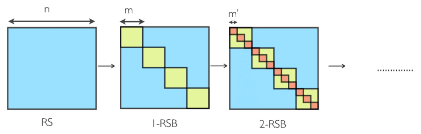

Note: This blog post is still a rough draft. Read on with caution.
In the previous post we’ve written about the replica symmetric solution to the Sherrington-Kirkpatrick model of mean field spin glasses. To briefly summarize, in order to compute statistical quantities of interest, we need to compute the free energy from the Hamiltonian of the model:
\[ f(\beta) = \lim_{n\to 0}\frac{1}{\beta n}\operatorname*{extr}_q{\mathcal{S}[q]} \]
where
\[ \mathcal{S}[q] = -\frac{(\beta J)^2 n}{4}+\frac{(\beta J)^2}{2}\sum_{\alpha < \beta} q_{\alpha\beta}^2 - \log\operatorname*{Tr} \exp[-H] \]
is the effective action, and the saddle point extremum is taken over all matrices \(q\). Here \(H=(-\beta J)^2\sum_{\alpha < \beta} q_{\alpha\beta} s^\alpha s^\beta\) and the trace is over the \(n\) Ising spins \(s^\alpha\) for each replica. There are two remarks to make about this expression. The first is the realization that computing the extremum over all matrices \(q=\{q_{\alpha\beta}\}\) is extremely difficult to do. So difficult in fact, that we usually resort to taking the extremum saddle point over specific parameterizations of subspaces of matrices, such as the replica symmetric ansatz used in the previous post. This parameterization restricts our computation to matrices of the form \(q_{\alpha\beta}=q_0\) for some fixed value \(q_0\) (with the boundary condition \(q_{\alpha\alpha}=1\) for each replica \(\alpha\)).
However, even though we could compute an analytic form the free energy from this, the resulting free energy gave physically uninteresting results, such as negative entropy in the low temperature regime. Thus this lead to the realization that we would need to break the replica symmetry and look at other parameterizations in matrix space in order to find the right saddle points that extremize the free energy computation.
extrema as \(n\to 0\)
The second remark is really a question: why are we looking for general extrema of the effective energy \(\mathcal{S}[q]\)? Why not a maximum, which is actually the right thing we need for a saddle point calculation? Recall that the free energy is really an integral over matrix space \(q\) of a rapidly decaying exponential. We are hence asymptotically approximating this integral via a saddle point expansion.
This is really an artifact of the \(n\to 0\) limit that is crucial to the replica method. We give an toy example due to Mei-Montanari: consider the toy quantity
\[ Z_{\text{toy}}(n)=(2\pi/N)^{n(n-1)/4} \]
where \(n\) is a real number. When \(n\) is an integer, and using the integral identity
\[ \sqrt{\frac{2\pi}{N}} = \int_\mathbf{R} e^{-\frac{N}{2}z^2} dz \]
we get the integral representation
\[ Z_{\text{toy}}(n) = \int \prod_{(\alpha\beta)} dQ_{\alpha\beta} \exp\left(-\frac{N}{2}\sum_{(\alpha\beta)} Q^2_{\alpha\beta}\right)\equiv \int \prod_{(\alpha\beta)} dQ_{\alpha\beta} \exp(Ng(Q)) \]
where \((\alpha\beta)\) runs over all unordered pairs of indices \(\alpha,\beta\in\{1,...,n\}\) with \(\alpha\neq\beta\). The above integral is in a form that can be evaluated via the saddle point method, and so we are looking for the matrix \(Q^*\) that maximizes \(g(Q)\).
Making the replica symmetric assumption, \(Q^*_{\alpha\beta}=q_0\) for \(\alpha\neq\beta\), we get that \(g(Q^*)=-n(n-1)q_0^2/4\). Since we are seeking a maximum, we find that \(q_0=0\), which yields \(Z_{\text{toy}}(n)=1\). However, when \(n < 1\), \(q_0=0\) corresponds to a minimum of \(g(Q^*)\), rather than a maximum! Note the second derivative of \(g(Q^*)\) with respect to \(q_0\) is given by
\[ g''(Q^*) = -\frac{1}{2}n(n-1) \]
which is positive for \(n<1\)! While annoying, this is an unavoidable aspect of the replica method. As a consequence, we will often be concerned with the stability of the saddle points we discover using the various replica symmetry breaking ansatz we choose.
1RSB
In this section we will discuss Parisi’s replica symmetry breaking ansatz for the SK model. His strategy was to break the replica symmetry in a recursive fashion, each time expanding the space of matrices described by the ansatz, while still controlling the analytic solutions of free energies that can be extracted from this framework. In this framework, we can consider the replica symmetric solution to be the 0-step replica symmetry breaking solution, or 0RSB.
In the 0RSB solution, we regard the matrix \(q_{\alpha\beta}\) in the integral regime to be of the form
\[ \begin{pmatrix} 0 & & & & & \\ & 0 & & & q & \\ & & 0 & & & \\ & & & 0 & & \\ & q & & & 0 & \\ & & & & & 0 \end{pmatrix} \]
where the off-diagonal elements are a fixed value \(q\). In the effective action, this allows for the computation of the last term analytically, as
\[ \begin{align} H &= (-\beta J)^2\sum_{\alpha < \beta} q_{\alpha\beta} s^\alpha s^\beta \\ &= \frac{\beta^2 J^2}{2}q\left[\left(\sum_\alpha s^\alpha\right)^2 - n\right] \end{align} \]
and so by utilizing the Hubbard-Stratonovich transform we get that
\[ \begin{align} \operatorname*{Tr}_s \exp[-H] &= \operatorname*{Tr}_s \exp\left(-\frac{\beta^2 J^2}{2}q\left[\left(\sum_\alpha s^\alpha\right)^2 - n\right]\right) \\ &= \exp\left[\frac{(\beta J)^2 qn}{2}\right] \operatorname*{Tr}_s \int_\mathbf{R} Dz \exp\left(\beta J\sqrt{q} z \sum_\alpha s^\alpha\right) \end{align} \]
where \(Dz=\frac{dz}{\sqrt{2\pi}}e^{-z^2/2}\) is the standard Gaussian measure. Note that this decouples the sum of replicas into independent components, which we can calculate analytically
\[ \begin{align} \sum_{\{s^\alpha\}}\exp\left(\beta J\sqrt{q}\sum_\alpha s^\alpha\right) &= \prod_\alpha\sum_{\{s^\alpha\}} \exp\left(\beta J\sqrt{q}z s^\alpha\right) \\ &= \prod_\alpha 2\cosh(\beta J\sqrt{q}z) \\ &= (2\cosh(\beta J \sqrt{q}z))^n \end{align} \]
As in the last post, this leads to the analytical expression for the \(n\to 0\) limit of the effective action,
\[ \lim_{n\to 0} \frac{1}{\beta n}\mathcal{S}[q] = -\frac{\beta J^2}{4}(1-q)^2-\frac{1}{\beta}\int_\mathbf{R}Dz \log(2\cosh(\beta J \sqrt{q}z)) \]
The extremum of this object is our free energy, and by a simple computation is attained the self-consistency equation for the parameter \(q\)
\[ q = \int_\mathbf{R} Dz \tanh^2(\beta J \sqrt{q}z) \]
We repeat these calculations because these will be the same steps we take in the higher-step replica symmetry breaking solutions. The first-step replica symmetry breaking (1RSB) solution introduces an additional free parameter in our parametrization. For integer \(n\), let \(m_1\le n\) be a positive integer. We divide the replicas \(\alpha=1,...,n\) into \(n/m_1\) blocks and consider a block matrix where off-diagonal blocks have a constant value \(q_0\) and diagonal blocks recursively look like the 0RSB ansatz:
\[ \left[ \begin{array}{ccc|ccc|ccc} 0 && q_1 &&&&&& \\ &0&&&q_0&&&q_0\\ q_1&&0\\\hline \\ &q_0&&&\ddots&&&q_0\\ \\\hline &&&&&&0&&q_1\\ &q_0&&&q_0&&&0\\ &&&&&&q_1&&0\\ \end{array} \right] \]
Here \(q_1\) is the parameter of the diagonal 0RSB blocks. As in the 0RSB (replica symmetric) parameterization, this allows us to combinatorially express the Ising term in the effective energy as
\[ \beta^2 J^2\sum_{\alpha < \beta} q_{\alpha\beta} s^\alpha s^\beta = \frac{\beta^2 J^2}{2}\left\{q_0\left(\sum^n_\alpha s^\alpha\right)^2 + (q_1 - q_0)\sum_{\text{block}}^{n/m_1}\left(\sum_{\alpha\in\text{block}}^{m_1} s^\alpha\right)^2 - nq_1 \right\} \]
where \(\text{block}\) ranges over the \(n/m_1\) blocks the replicas \(\alpha\) have been separated into. Computing the trace,
\[ \begin{align} \operatorname*{Tr}_s \exp[-H] &= \exp\left[\frac{\beta^2 J^2 n q_1}{2}\right]\operatorname*{Tr}_s \int Dz_0 \exp\left(\beta J\sqrt{q_0} z_0 \sum_\alpha^n s^\alpha\right) \prod_{\text{block}}^{n/m_1} \int Dz_{1,\text{block}} \exp\left(\beta J\sqrt{q_1-q_0} z_{1,\text{block}} \sum_{\alpha\in\text{block}}^{m_1} s^\alpha\right) \\ &= \exp\left[\frac{\beta^2 J^2 n q_1}{2}\right]\int Dz_0\left\{\int Dz_1 [2\cosh(\beta J\sqrt{q_0}z_0 + \beta J\sqrt{q_1-q_0}z_1)]^{m_1}\right\}^{n/m_1} \end{align} \]
Again, using the asymptotic expansion of the power expression as \(a^n\simeq 1 + n\log{a}+\mathcal{O}(n^2)\),
\[ \operatorname*{Tr}_s \exp[-H] \simeq 1 + \frac{n}{m_1}\int Dz_0\log\int Dz_1 [2\cosh(\beta J\sqrt{q_0}z_0 + \beta J\sqrt{q_1-q_0}z_1)]^{m_1} \]
Finally, the quadratic term of the effective energy,
\[ \sum_{\alpha < \beta} q^2_{\alpha\beta} = \frac{1}{2}\left\{n^2q_0^2 + \frac{n}{m_1}m_1^2(q_1^2-q_0^2)-nq_1^2\right\} \]
gives the expression for the \(n\to 0\) limit of the effective energy
\[ \begin{align} \lim_{n\to 0} \frac{1}{\beta n}\mathcal{S}[q] &= \frac{(\beta J)^2}{4}\left((m_1-1)q_1^2-m_1q_0^2-1\right)-\frac{1}{n}\log\left\{1 + \frac{n}{m_1}\int Dz_0\log\int Dz_1 [2\cosh(\beta J\sqrt{q_0}z_0 + \beta J\sqrt{q_1-q_0}z_1)]^{m_1}\right\} \\ &\simeq\frac{(\beta J)^2}{4}\left((m_1-1)q_1^2-m_1q_0^2+2q_1-1\right)-\frac{1}{m_1}\int Dz_0\log\int Dz_1 [2\cosh(\beta J\sqrt{q_0}z_0 + \beta J\sqrt{q_1-q_0}z_1)]^{m_1} \end{align} \]
Extremizing this over the free parameters \(q_0, q_1\) of the 1RSB solution gives self-consistent equations, which is left to the reader to extract. We note that while this is an expansion of the space of matrices to look for a saddle point, the saddle points found here are still unstable, and so we need to keep looking towards larger and larger spaces.
kRSB
To get to the higher step replica symmetry breaking solutions, we recurse: the parameterization of the kRSB solution is again given by choosing an integer \(m_k\le n\) and splitting up the replicas \(\alpha\) into \(m_k\) blocks. We then form block matrices where off-diagonal blocks assume constant values \(q_0\), while diagonal blocks recursively implement the \((k-1)\)-RSB solution with free parameters \(q_1,...,q_{k-1}\):

In the \(k\to\infty\) limit, the free parameters \(q_k\) form a continuous function \(q(x)\), which then is used to comprise the full RSB solution of Parisi. We won’t dwell further on this, and instead try to look at an interesting consequence of this replica symmetry breaking ansatz.
ultrametricity
A question that pops to mind is “what is replica symmetry breaking physically”? Recall that the \(n\) replicas were introduced in the replica method in order to compute the quenched average \(\langle\log Z_J\rangle_J\), and that the starting partition function \(\langle Z^n\rangle\) was invariant to the permutation action of the symmetric group \(\Sigma_n\).
In this way, we can interpret the permutation symmetry to mean that the replicas are all “equal”. However, breaking the symmetry means to some extent that some replicas are more “important” than others! This introduces a hierarchy among the replicas. What then is the structure of this hierarchy? And what does it translate to in our free energy surface?
Consider two replicas, \(\alpha, \beta\) of the model (that is, the interactions are fixed for both \(J^\alpha_{ij}=J^\beta_{ij}\), but the spin configurations may differ via thermal fluctuations). The overlap between the two is defined as the quantity
\[ q_{\alpha\beta} = \frac{1}{N}\sum_{i}^N s_i^\alpha s_i^\beta \]
i.e. the empirical correlation between spin sites of the two replicas. Given the constraints imposed by the interaction couplings \(J\), we expect that a meaningful order parameter for the two replicas can arise by looking at the probability distribution of the overlap
\[ P_J(q) = \operatorname{Tr}_{s^a, s^b}\left[\frac{e^{-\beta\sum_{ij}J_{ij}s^a_i s^a_j}e^{-\beta\sum_{ij}J_{ij}s^b_i s^b_j}}{Z_J^2} \delta\left(\frac{1}{N}\sum_{i}^N s_i^a s_i^b - q\right) \right] \]
This distribution depends on the frustrated couplings, and so we want to understand the typical behavior by looking at the quenched average \(\langle P_J(q)\rangle_J\).
While complicated, this can be simplified using a modified replica argument. Notice that the main difficulty in the average is the fact that the random interactions \(J_{ij}\) appear in both the numerator and denominator \(Z_J^2\). Multiplying numerator and deominator both by \(Z_J^{n-2}\) and letting \(n\to 0\), we can eliminate the \(Z_J\)-terms as the denominator now tends to 1. Then we have
\[ \langle P_J(q)\rangle_J = \lim_{n\to 0} \left\langle\operatorname{Tr}_{s^\alpha}\left[\prod_\alpha e^{-\beta \mathcal{H}[s^\alpha]}\delta\left(\frac{1}{N}\sum_{i}^N s_i^a s_i^b - q\right) \right]\right\rangle_J \]
By the same kind of replica calculation done in the previous post, we see that this integral is asymptotically dominated in the thermodynamic (\(N\to\infty\)) limit by the contributions from all saddle points. This ultimately leads to
\[ \langle P_J(q)\rangle_J = \lim_{n\to 0}\sum_{Q}\delta(Q_{ab} - q) \]
where the sum is over all saddle points of the above action. However, by permutation symmetry of the replicas, given any saddle point, we get another by permuting the replica indices. Hence equivalently, we can consider one matrix \(Q_{ab}\) and average over all the rows and columns:
\[ \langle P_J(q)\rangle_J = \lim_{n\to 0}\frac{1}{n(n-1)}\sum_{a\neq b} \delta(Q_{ab} - q) \]
Upshot: The replica symmetry breaking ansatz shows that the energy surface of a spin glass has many valleys, that in the thermodynamic limit become closed off from one another as their energy barriers become too high. In essence, replica symmetry breaking is ergodicity breaking.
We close this post by giving another example of the complexity of the energy surfaces of spin glasses. Consider three replicas, and consider the distribution of mutual overlaps:
\[ P_J(q_{12}, q_{23}, q_{31}) = \operatorname{Tr}_{s^1, s^2, s^3}\left[\frac{e^{-\beta[\mathcal{H}[s^1] + \mathcal{H}[s^2] + \mathcal{H}[s^3]]}}{Z^3_J}\delta\left(\frac{1}{N}\sum_{i}^N s_i^1 s_i^2 - q_{12}\right)\delta\left(\frac{1}{N}\sum_{i}^N s_i^2 s_i^3 - q_{23}\right)\delta\left(\frac{1}{N}\sum_{i}^N s_i^3 s_i^1 - q_{31}\right)\right] \]
By the same argument, we find that
\[ \langle P_J(q_{12}, q_{23}, q_{31})\rangle_J = \lim_{n\to 0}\frac{1}{n(n-1)(n-2)}\sum_{a\neq b, b\neq c, c\neq a} \delta(Q_{ab}-q_{12})\delta(Q_{bc}-q_{23})\delta(Q_{ca}-q_{31}) \]
When \(Q_{ab}\) satisfies a kRSB solution scheme, we see that the entries of the matrix must follow a certain structure according to this probability distribution. Suppose for three replicas \(a, b, c\), we have that \(Q_{ab}=q_1, Q_{bc}=q_2, Q_{ac}=q_3\). Then if \(q_1 > q_2\ge q_3\), we must have that \(q_2 = q_3\)!
To see this, note that because \(q_1\neq q_2\), \(a\) and \(c\) must be in different blocks according to the RSB scheme. Analogously, \(b\) and \(c\) must be in different blocks. But this means that \(Q_{ac}\) and \(Q_{bc}\) reside in off-diagonal blocks, as \(Q_{\alpha\beta}\) is in a diagonal block by definition when \(\alpha,\beta\) are in the same replica block by RSB. As all entries of off-diagonal blocks in the RSB scheme are the same, we have that \(q_2=q_3\).
This endows the space of overlaps a property called ultrametricity, and is a mathematical structure appearing in many guises, usually whenever a hierarchical structure can be found.
There should be a fascinating connection between this replica symmetry breaking ultrametric structure and the canonical ultrametric structure of interest in mathematics, namely the one on the \(p\)-adic numbers, but that will have to wait for another post…